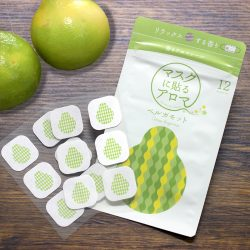
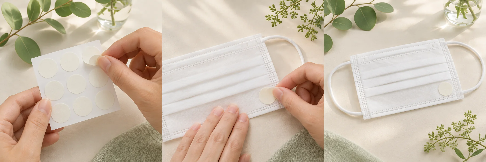

天然アロマオイル
植物から抽出した100%天然アロマオイルを使用しています。
 現行公式サイト掲載の商品画像
現行公式サイト掲載の商品画像
ORIGINAL PRODUCTS / 01
香りを、そっと身につける。
植物由来の天然アロマを使った、マスクに貼るアロマシールです。
価格・在庫・取扱店舗は公式ページでご確認ください。
植物から抽出した100%天然アロマオイルを使用しています。
気分や季節に合わせて、4つの香りから選べます。
イラスト入りのシールをマスクの外側に貼って楽しめます。
公式商品写真を見ながら、香りの素材と印象を比べられます。

OFFICIAL PRODUCT IMAGE紅茶のアールグレイでも知られる、親しみやすい柑橘系の香り。

提案用イメージ4種類の香りから、使いたいものを選びます。
マスクの外側に貼ってお使いください。
ふんわり漂う香りを楽しめます。
使用前に、商品パッケージと公式ページに記載された使用方法・注意事項をご確認ください。
最新の商品情報、販売状況、取扱店舗は山本香料公式サイトでご案内しています。